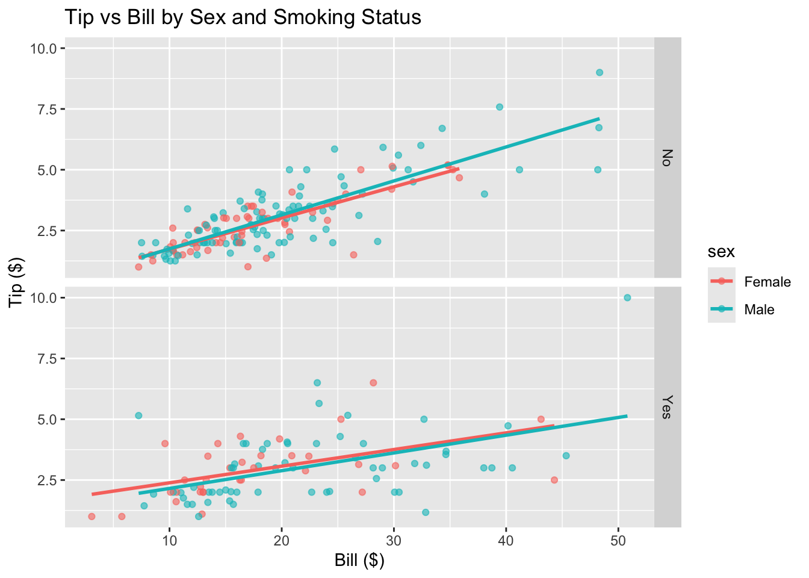
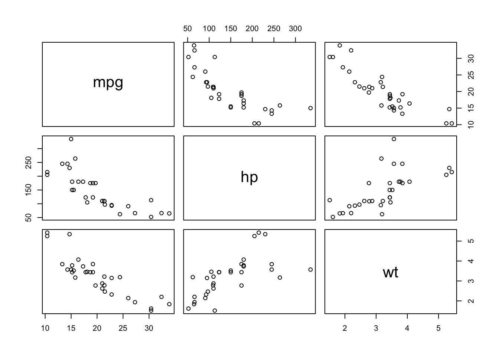

colors <- c('Red', 'Pink', 'White')
counts <- c(80, 60, 40)
bar_df <- data.frame(Color = colors, Count = counts)
ggplot(bar_df, aes(x = Color, y = Count)) +
geom_bar(stat = 'identity', fill = 'steelblue') +
theme_minimal() +
labs(title = 'Poinsettia Colors')Graphs and Data Visualization
1 Introduction
- Graphs reveal information about the center, shape, and spread of distributions.
- They can also show typical and extreme outcomes, associations, and differences between groups.
- Different data types require different graph types.
2 Categorical Data
Categorical data types:
- Nominal: no natural order (e.g., eye color, blood type).
- Ordinal: ordered, but spacing not meaningful (e.g., therapy response).
- Interval: ordered and evenly spaced (e.g., fruit count).
2.1 Bar Chart Example
Bar chart is used for displaying categorical variables.
R code
Question
What does the bar plot tell you about the color distribution for this poinsettia variety?
3 Quantitative Data
- Measured on a numeric scale: e.g., weights, heights, cholesterol levels.
- Use histograms, boxplots, dotplots, density plots.
3.1 Histogram Example (Tip Amounts)
Histograms classify values into bins of equal width
- Heights of bars represent relative frequencies
R code
data("tips", package="reshape2")
ggplot(tips, aes(x = tip)) +
geom_histogram(binwidth = 1, fill = 'orange', color = 'black') +
theme_minimal() +
labs(title = 'Histogram of Tip Amounts', x = 'Tip ($)', y = 'Count')
Question
What does this histogram tell you about tips at this restaurant?
Tip
- Center
- Shape
- Spread
3.2 Try Different Bin Widths
R code
bw_list <- c(0.25, 0.5, 1.0)
plots <- lapply(bw_list, function(bw) {
ggplot(tips, aes(x = tip)) +
geom_histogram(binwidth = bw, fill = 'lightblue', color = 'black') +
ggtitle(paste('Bin Width =', bw)) +
theme_minimal()
})
library(gridExtra)
do.call(grid.arrange, c(plots, ncol = 1))3.3 Boxplot
Boxplot is graphical display of the five number data summary (minimum, Q1, median, Q3, maximum). It is good for comparing samples from different populations.
R code
ggplot(tips, aes(y = tip)) +
geom_boxplot(fill = 'lightgreen') +
theme_minimal() +
labs(title = 'Boxplot of Tip Amounts', y = 'Tip ($)')4 One Quantitative & One Categorical
Side by side box plot and dot plots can be used to compare distributions of a quantitative response variable for different levels of a categorical variable.
R code
ggplot(tips, aes(x = day, y = tip)) +
geom_boxplot(fill = 'skyblue') +
theme_minimal() +
labs(title = 'Tip Amount by Day of Week')5 Two Quantitative Variables
Scatterplots convey information about associations between quantitative variables and also about unusual observations.
R code
tips$bill <- tips$total_bill
ggplot(tips, aes(x = bill, y = tip)) +
geom_point() +
geom_smooth(method = 'lm', se = FALSE, col = 'red') +
theme_minimal() +
labs(title = 'Tip vs Bill Amount', x = 'Bill ($)', y = 'Tip ($)')- How is the tip related to the bill?
- Which variable is the response? Which is the explanatory variable?
- What type of relationship would you expect?
6 Exercises
6.1 Exercise 1: Bar Chart from Survey
Create a bar chart for the following survey results:
| Pet Type | Count |
|---|---|
| Dog | 15 |
| Cat | 10 |
| Fish | 3 |
| Bird | 2 |
Use ggplot2 to visualize the data and describe what the chart tells you about pet preferences.
View Solution
Here’s the R code to visualize the data using ggplot2:
Code
library(ggplot2)
pet_df <- data.frame(
Pet = c("Dog", "Cat", "Fish", "Bird"),
Count = c(15, 10, 3, 2)
)
ggplot(pet_df, aes(x = Pet, y = Count, fill = Pet)) +
geom_bar(stat = "identity") +
theme_minimal() +
labs(title = "Pet Types", x = "Pet Type", y = "Count") +
scale_fill_brewer(palette = "Set2")
6.2 Exercise 2: Simulated Histogram
Simulate 300 observations from a normal distribution with mean 70 and standard deviation 10.
- Plot a histogram using binwidth = 5 and 10.
- Overlay a density curve using
geom_density(). - Describe the center, spread, and shape of the distribution.
View Solution
Code
set.seed(4750)
x <- rnorm(300, mean = 70, sd = 10)
# Histogram with binwidth 5
p1 <- ggplot(data.frame(x), aes(x = x)) +
geom_histogram(binwidth = 5, fill = "skyblue", color = "white", alpha = 0.7) +
geom_density(aes(y = after_stat(count)*5), color = "red", linewidth = 1.2) +
labs(title = "Histogram (binwidth = 5) with Density", x = "Value", y = "Count") +
theme_minimal()
# Histogram with binwidth 10
p2 <- ggplot(data.frame(x), aes(x = x)) +
geom_histogram(binwidth = 10, fill = "orange", color = "white", alpha = 0.7) +
geom_density(aes(y = after_stat(count)*10), color = "red", linewidth = 1.2) +
labs(title = "Histogram (binwidth = 10) with Density", x = "Value", y = "Count") +
theme_minimal()
library(patchwork)
p1 / p26.3 Exercise 3: Boxplots by Group
Simulate exam scores for two groups of students (Group A and Group B), each with 50 observations.
- Generate scores from
rnorm(50, mean=80, sd=5)for Group A andrnorm(50, mean=75, sd=7)for Group B. - Create a combined dataframe and make a boxplot comparing the two groups.
- Interpret differences in central tendency and variability.
View Solution
Here is the R code and a sample interpretation:
Code
set.seed(4750)
group_a <- rnorm(50, mean = 80, sd = 5)
group_b <- rnorm(50, mean = 75, sd = 7)
scores <- data.frame(
Score = c(group_a, group_b),
Group = rep(c("A", "B"), each = 50)
)
library(ggplot2)
ggplot(scores, aes(x = Group, y = Score, fill = Group)) +
geom_boxplot() +
theme_minimal() +
labs(title = "Exam Scores by Group", y = "Score")
Interpretation:
- Central tendency: Group A has a higher median and mean score than Group B.
- Variability: Group B shows a wider spread (greater interquartile range and more outliers) compared to Group A, which aligns with the larger standard deviation used in its simulation.
6.4 Exercise 4: Scatterplot with Regression
Simulate a dataset of 100 observations where x ~ runif(100, 0, 100) and y = 0.5 * x + rnorm(100, 0, 5).
- Create a scatterplot of
yvsx. - Add a regression line.
- Describe the relationship and interpret the slope.
View Solution
Code
set.seed(4750)
x <- runif(100, 0, 100)
y <- 0.5 * x + rnorm(100, 0, 5)
data <- data.frame(x = x, y = y)
ggplot(data, aes(x = x, y = y)) +
geom_point(color = "steelblue", alpha = 0.7) +
geom_smooth(method = "lm", se = TRUE, color = "red") +
labs(title = "Scatterplot of y vs x with Regression Line",
x = "x",
y = "y") +
theme_minimal()Interpretation:
- There is a strong positive linear relationship between
xandy, as expected from the model. - The slope of the regression line is close to 0.5, indicating that, on average, each 1-unit increase in
xresults in a 0.5-unit increase iny. - The scatter around the regression line reflects the normal error term with standard deviation 5.
7 Two Quantitative & One Categorical
- Grouping: a graph consisting of a single panel with multiple variables differentiated using different visual characteristics such as color, shape, and size.
- Faceting: a graph consisting of several separate panels, with one for each level of the faceted variable, or combination of two faceted variables.
Grouping
ggplot(tips, aes(x = bill, y = tip, color = sex)) +
geom_point(alpha = 0.6) +
geom_smooth(method = 'lm', se = FALSE) +
labs(title = 'Tip vs Bill by Gender')Faceting
ggplot(tips, aes(x=bill, y=tip)) +
geom_point(alpha=0.6) +
geom_smooth(method = 'lm', se = FALSE) +
facet_wrap(~ sex, ncol=2) +
labs(title = 'Tip vs Bill by Gender')
- Does the relationship differ for men and women?
8 Two Quantitative & Two Categorical Variables
Grouping + Faceting
ggplot(tips, aes(x = bill, y = tip, color = sex)) +
geom_point(alpha = 0.6) +
geom_smooth(method = "lm", se = FALSE) +
facet_grid(smoker ~ .) +
labs(title = "Tip vs Bill by Sex and Smoking Status",
x = "Bill ($)", y = "Tip ($)")
Faceting Only
ggplot(tips, aes(x = bill, y = tip, color = sex)) +
geom_point(alpha = 0.6) +
geom_smooth(method = "lm", se = FALSE) +
facet_grid(smoker ~ sex) +
labs(title = "Tip vs Bill by Sex and Smoking Status",
x = "Bill ($)", y = "Tip ($)")9 Three Variables
9.1 3D Scatterplot
Code
library(plotly)
data(mtcars)
# Example with mtcars
plot_ly(
data = mtcars,
x = ~mpg, y = ~hp, z = ~wt,
type = 'scatter3d',
mode = 'markers',
color = ~as.factor(cyl)
)9.2 Bubble Chart
Code
ggplot(mtcars,
aes(x=mpg, y=hp, size=wt)) +
geom_point(alpha=.5,
fill="red",
color="black",
shape=21) +
scale_size_continuous(range = c(1, 5)) 
10 Scatterplot Matrix
A scatterplot matrix (sometimes called a “pairs plot”) is used to visualize the pairwise relationships between several quantitative variables in a dataset, all at once.
- Each row and column represents one variable.
- The off-diagonal panels show scatterplots for each pair of variables (e.g., x vs y, x vs z, y vs z).
- The diagonal often shows the distribution of each variable (as a histogram, density, or boxplot).
- You can optionally color points by a group or class variable.
Code
data(mtcars)
library(GGally)
GGally::ggpairs(
mtcars,
columns = c("mpg", "hp", "wt")
)
Code
# compute correlations
cor(mtcars[,c("mpg", "hp", "wt")]) mpg hp wt
mpg 1.0000000 -0.7761684 -0.8676594
hp -0.7761684 1.0000000 0.6587479
wt -0.8676594 0.6587479 1.000000011 Parallel Coordinates
A parallel coordinates plot is a powerful visualization tool used for exploring and comparing multivariate data (data with several quantitative variables). It’s especially valuable when you want to see how patterns, clusters, or outliers appear across many variables at once.
Code
# Convert cyl to factor for coloring
mtcars$cyl <- as.factor(mtcars$cyl)
GGally::ggparcoord(
mtcars,
columns = c(1,4,6), # mpg, hp, wt
groupColumn = "cyl",
scale = "uniminmax", # Normalize to [0,1] for fair comparison
showPoints = TRUE,
alphaLines = 0.6
) +
scale_color_brewer(palette = "Dark2", name = "Cylinders") +
labs(title = "Parallel Coordinates Plot: mtcars (by cylinders)")
Interpretation:
- Each line is a car.
- The color indicates the number of cylinders.
- Cars with more cylinders generally have lower mpg and higher hp and weight.
12 Exercises
12.1 Exercise 1: Ames Housing Data
Load the Ames Housing data into R and answer the following questions:
Ames = read.csv("Ameshousing.csv")
head(Ames) SalePrice Bedrooms LotArea LivingArea GarageArea Neighborhood
1 270000 4 11792 2283 632 Gilbert
2 377500 3 14892 1746 758 Gilbert
3 337500 3 12456 1718 786 NridgHt
4 462000 4 14257 2772 754 NridgHt
5 489900 2 14803 2084 1220 NridgHt
6 555000 2 15431 2402 672 NridgHt- Summary Statistics
- How many homes were included in this study?
- What are the names of the variables for which information was collected?
- Compute the median living area, the mean living area and the standard error for the mean living area for all of the houses in the data set.
- Compute the median living area, the mean living area and the standard error for the mean living area for the houses in each neighborhood.
- Compute the number of houses, mean sale price and the standard error of the mean sale price for houses with living areas less than 1800 square feet.
- Summarize in a paragraph the information in the correlation matrix about associations between sales price, lot size, living area, garage area, and number of rooms from the sample correlation matrix.
View Solution
Code
dim(Ames)[1][1] 168Code
names(Ames)[1] "SalePrice" "Bedrooms" "LotArea" "LivingArea" "GarageArea"
[6] "Neighborhood"Code
mean_LivingArea <- mean(Ames$LivingArea)
mean_LivingArea[1] 1700.107Code
median_LivingArea <- median(Ames$LivingArea)
sderr_LivingArea <- sd(Ames$LivingArea)/ sqrt(length(Ames$LivingArea))
sderr_LivingArea[1] 32.32775Code
mean_LivingArea <- tapply(Ames$LivingArea, Ames$Neighborhood, mean)
mean_LivingArea CollgCr Gilbert NridgHt
1565.921 1658.966 1880.921 Code
median_LivingArea <- tapply(Ames$LivingArea, Ames$Neighborhood, median)
median_LivingAreaCollgCr Gilbert NridgHt
1591.5 1560.0 1743.0 Code
sd_LivingArea <- tapply(Ames$LivingArea, Ames$Neighborhood, sd)
sderr_LivingArea <- sd_LivingArea / sqrt(tapply(Ames$LivingArea, Ames$Neighborhood, length))
sderr_LivingArea CollgCr Gilbert NridgHt
42.72812 56.21652 57.40376 Code
Ames2 <- Ames[ Ames$LivingArea<1800, ]
n <- dim(Ames2)[1]
cat("number of houses with living area < 1800: ", n)number of houses with living area < 1800: 116Code
mean_Saleprice <- mean(Ames2$SalePrice)
cat("Mean Sale Price for Houses with Living Area < 1800: ", mean_Saleprice)Mean Sale Price for Houses with Living Area < 1800: 215756.7Code
sderr_SalePrice <- sd(Ames2$SalePrice)/ sqrt(length(Ames2$SalePrice))
cat("Stderror for Mean Sale Price: ", sderr_SalePrice)Stderror for Mean Sale Price: 4693.031- Graphical Summaries
- Create a scatterplot with a smooth curve passed through the points.
- Fit a least squares regression line to the data in the plot.
- What does the regression line indicate about sales prices of houses increase with living area?
- What information is provided by the plot with smooth curve?
- Add a new variable to the data frame that contains information on sales price divided by the living area in the house, i.e., the sales price per square foot of living area.
- Create a histogram for the price per square foot of living space.
- What does this histogram reveal about the distribution of costs per square foot of living space for houses sold in the Ames area? The description should be based on the shape, center and spread of the distribution.
- Create separate plots of sales prices versus living space categorized for each neighborhood
- Construct side-by-side box plots to compare prices per square foot of living space across neighborhoods.
- Describe the relationship between sales price and total living area of house changes across the three neighborhoods.
View Solution
Code
library(ggplot2)
Ames %>%
ggplot(aes(x=LivingArea, y=SalePrice)) +
geom_point(alpha=.7) +
geom_smooth() +
labs(
x="Living Area (sq ft)",
y="Sale Price (dollars)",
title="Sale Price vs Total Living Area"
)Code
lm(SalePrice ~ LivingArea, data = Ames)
Call:
lm(formula = SalePrice ~ LivingArea, data = Ames)
Coefficients:
(Intercept) LivingArea
-21769.1 159.5 Code
plot( Ames$LivingArea, Ames$SalePrice,
xlab="Living Area (sq ft)",
ylab="Sale Price (dollars)",
main = "Sale Price vs Total Living Area")
abline(lm(SalePrice~LivingArea, data=Ames), lty=1)
The slope of the regression suggests that the mean sale price of homes in the Ames area goes up by about 159.50 dollars for each additional square foot of living space.
The smooth curve indicates that there is an approximate straight line relationship between the mean home price and the living area of homes for homes with between 800 and 2000 square feet of living area, but the relationship curves up for larger home sizes. Also the variation in sale prices tends to increase with the amount of living area in the house.
Code
Ames$pricesqft <- Ames$SalePrice/Ames$LivingArea
head(Ames) SalePrice Bedrooms LotArea LivingArea GarageArea Neighborhood pricesqft
1 270000 4 11792 2283 632 Gilbert 118.2654
2 377500 3 14892 1746 758 Gilbert 216.2085
3 337500 3 12456 1718 786 NridgHt 196.4494
4 462000 4 14257 2772 754 NridgHt 166.6667
5 489900 2 14803 2084 1220 NridgHt 235.0768
6 555000 2 15431 2402 672 NridgHt 231.0575Code
Ames %>% ggplot() +
geom_histogram(aes(pricesqft), binwidth =20) 
- This histogram indicates that the distribution of costs per square foot of living space for houses sold in the Ames area is centered around $145 per square foot. The distribution is skewed to the right and it appears to be bimodal with one mode around $125 per square foot and another near $165 pre sqaure foot. Most houses cost between $100 and $200 per square foot of living space.
Code
Ames %>%
ggplot(aes(x=LivingArea, y=SalePrice)) +
geom_point() +
geom_smooth() +
facet_grid( . ~ Neighborhood) +
labs(
x="Living Area (sq ft)",
y="Sale Price (dollars)",
title="Sales Price vs Total Living Area"
)
Code
Ames %>%
ggplot(aes(x=LivingArea, y=SalePrice)) +
geom_point() +
geom_smooth() +
facet_grid(Neighborhood ~ .) +
labs(
x="Living Area (sq ft)",
y="Sale Price (dollars)",
title="Sales Price vs Total Living Area"
)
Code
Ames %>%
ggplot(aes(x=Neighborhood, y=pricesqft)) +
geom_boxplot() +
labs(y="Sales Price per Square Foot")
- In all three neighborhoods sales prices tend to be larger for house with more living area. In the College Circle (CollgCr) and Northridge Heights (NridgHt) neighborhoods, there are strong linear relationships between these two variables. Because the slope is larger for houses in the Northridge Heights neighborhood, the price per square foot of living space is higher. There are more expensive houses in the Northridge Heights neighborhood. In Gilbert, the trend in sales prices is not so close to a straight line. There is little trend in sales prices for houses with less than 1,750 square feet of living space. There is also little trend in the sales prices for houses with living space above 1,900 square feet, but those houses are more expensive than house with less then 17,50 square feet. There is one relatively expensive house with about 1,750 square feet of living space that appears to be an outlier. Perhaps this house has an extremely large lot size or some additional buildings on the property. This should be investigated.
12.2 Exercise 2: Music Clips Data
The music clips data is posted in music-plusnew-sub.csv. The data file has five quantitative variables containing audio information from 62 songs. The first two columns (Artist, Type) describe the artist and type of music. The raw data come from a time series for the sound produced by each music clip (track). For each time series the variance of amplitude, average amplitude, maximum amplitude, and two additional variables calculated from the spectral decomposition of the time series are calculated. The Type variable classifies the tracks as either Rock, Classical or New Wave, and there are 5 tracks that are not identified.
- Read the data into a data frame, indicating that the row names are in column 1 of the data file and that column is not a variable.
- Obtain information on the dimensions of the data frame. Also list the column names. List the first six columns odf data.
- First select a subset of the data that contains only classical and rock music.
- For classical and rock music make histograms for the avergae amplitude variable (
LAve) faceted byType. Set thebinwidthto units of 10. How do the distributions of average amplitude values differ between classical and rock music? - Make a scatterplot of
LVarvsLAve, with points colored by the type of music. Describe differences between the patterns of the points on the plot corresponding to Rock and Classical music. - Select three music types. The other songs have missing values for the music type.
- Make a parallel coordinate plot
- Reorder how the variables appear on the plot.
View Solution
Code
dat = read.csv("music-plusnew-sub.csv", row.names=1)
head(dat) Artist Type LVar LAve LMax LFEner LFreq
Dancing Queen Abba Rock 17600756 -90.00687 29921 105.9210 59.57379
Knowing Me Abba Rock 9543021 -75.76672 27626 102.8362 58.48031
Take a Chance Abba Rock 9049482 -98.06292 26372 102.3249 124.59397
Mamma Mia Abba Rock 7557437 -90.47106 28898 101.6165 48.76513
Lay All You Abba Rock 6282286 -88.95263 27940 100.3008 74.02039
Super Trouper Abba Rock 4665867 -69.02084 25531 100.2485 81.40140Code
str(dat)'data.frame': 62 obs. of 7 variables:
$ Artist: chr "Abba" "Abba" "Abba" "Abba" ...
$ Type : chr "Rock" "Rock" "Rock" "Rock" ...
$ LVar : num 17600756 9543021 9049482 7557437 6282286 ...
$ LAve : num -90 -75.8 -98.1 -90.5 -89 ...
$ LMax : int 29921 27626 26372 28898 27940 25531 14699 8928 22962 15517 ...
$ LFEner: num 106 103 102 102 100 ...
$ LFreq : num 59.6 58.5 124.6 48.8 74 ...Code
summary(dat) Artist Type LVar LAve
Length:62 Length:62 Min. : 293608 Min. :-98.063
Class :character Class :character 1st Qu.: 2844213 1st Qu.: -6.253
Mode :character Mode :character Median : 8210359 Median : -5.662
Mean : 19951792 Mean : -7.807
3rd Qu.: 24547475 3rd Qu.: 1.962
Max. :129472199 Max. :216.232
LMax LFEner LFreq
Min. : 2985 Min. : 83.88 Min. : 41.41
1st Qu.:16200 1st Qu.:101.69 1st Qu.: 99.18
Median :24431 Median :104.35 Median :175.29
Mean :22486 Mean :104.03 Mean :231.39
3rd Qu.:29918 3rd Qu.:108.15 3rd Qu.:315.12
Max. :32766 Max. :114.00 Max. :877.77 Code
table(dat$Type)
Classical New wave Rock
24 3 30 Code
df.sub = dat %>%
dplyr::filter(Type=="Rock" | Type=="Classical")
ggplot(df.sub, aes(LAve)) +
geom_histogram(binwidth=10) +
facet_wrap( ~ Type, ncol=1)
Code
ggplot(df.sub, aes(x=LVar, y=LAve, color=Type)) +
geom_point()
Code
dat2 = dat %>%
filter(Type=="Rock" | Type=="Classical" | Type=="New wave")
head(dat2) Artist Type LVar LAve LMax LFEner LFreq
Dancing Queen Abba Rock 17600756 -90.00687 29921 105.9210 59.57379
Knowing Me Abba Rock 9543021 -75.76672 27626 102.8362 58.48031
Take a Chance Abba Rock 9049482 -98.06292 26372 102.3249 124.59397
Mamma Mia Abba Rock 7557437 -90.47106 28898 101.6165 48.76513
Lay All You Abba Rock 6282286 -88.95263 27940 100.3008 74.02039
Super Trouper Abba Rock 4665867 -69.02084 25531 100.2485 81.40140Code
GGally::ggparcoord(dat2, columns=3:7,
groupColumn = "Type",
title="Parallel Coordinate Plot: Music Types")
Code
GGally::ggparcoord(dat2, columns=c(4,3,5,6,7),
groupColumn = "Type",
title="Parallel Coordinate Plot: Music Types")